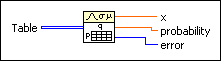

Contingency Table VI
Owning Palette: Hypothesis Testing VIs
Requires: Full Development System
Computes the Pearson  2 test for independence. This function is used to test whether the row and column categorical variables of the contingency table are independent.
2 test for independence. This function is used to test whether the row and column categorical variables of the contingency table are independent.

 Add to the block diagram Add to the block diagram |
 Find on the palette Find on the palette |


 x}
x}